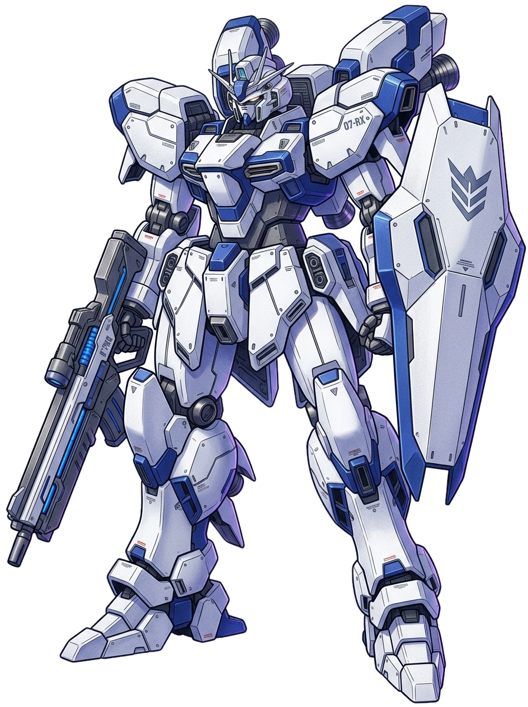

他プレイヤーの基地を見学中
自分の基地へ帰還
AMURO
アムロ・レイの基地
Rank: 42
宇宙域
機体博物館
収蔵図鑑進捗
34
/ 150 機

殿堂展示 — 館長のお気に入り
MS-06S
シャア専用ザクII
赤い彗星の機体。高い機動性で敵を翻弄する。この博物館の目玉展示です。
— 館長コメント
画像ダミー
RX-78-2
ガンダム
？
— 未収蔵 —
空き展示台
？
— 未収蔵 —
空き展示台
📝 見学者ノート
シャア・アズナブル
ライバル
2026.07.20 19:42
見事なコレクションだな。だが私のザクが展示されているのはどういうことだ？
ブライト・ノア
2026.07.19 14:15
左舷の弾幕が薄いぞ！次はもっと砲台を強化しておくことだな。
🗑 削除
名無し兵
2026.07.18 09:00
（※館長視点モック: 自分の基地のノートは削除アイコンが表示される）
ああああああああああああ
この基地に足跡を残す
0 / 140 文字
記帳する
【参考】相手が博物館未建設の場合
🚧
このプレイヤーはまだ博物館を建設していません。
UIコンポーネント: 見学導線の配置例（プロフィール画面）
A
アムロ・レイ
総合ランク 42位
基地を見学 🔍